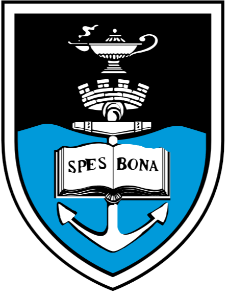

I am
attentive.
intelligent.
curious.
well-spoken.
inquisitive.
I am an ambitious and well-spoken third-year student at the
University of Cape Town pursuing an undergraduate degree in
Geoinformatics with a major in Computer Science.
I am proficient in both Java and Python
programming. Beyond my academic success, I have
independently cultivated my web development skills. This
ePortfolio is developed by me! I used the basics: HTML, CSS
and Vanilla Javascript that I learnt in high school, skills
I utilised to singlehandedly develop our Prefect Website at
the time. I have since augmented that knowledge by learning
Typescript and using the React.js library, which I am
applying in two of my current Single-Page Application
projects, the
UCT African Feminist Society Archive
and the Vegilicious Newsletter.
In June of last
year, I was part of a select few students who attended the
Deep Learning IndabaX conference that brought together
industry professionals and academics who utilise Machine
Learning and other forms of AI in their work from all over
South Africa. I also follow blogs on Medium Digest such as
JavaScript in Plain English and Towards Data Science. I
consider myself an eternal learner in the space. Improvement
is key. It is a theme that permeates my whole journey as a
developer - I pride myself on staying on top of the latest
innovations.
It is evident in projects that I have take up that
student organising
is important to me. I am a committee member of Vegilicious,
UCT's vegan and vegitarian society. The African Feminist
Society was started by me and my friends. I wear my values
at the forefront of what I do. I embody the ideal of social
consciousness from my student leadership roles to my career
aspirations.
My Education

University of Cape Town
BSc(Hons) Geoinformatics & Computer Science
Jan 2022 - Feb 2026
Accumulated Weighted GPA of 73.09%
Achievements: Dean's List 2023 see more
Extramurals: Vegilicious Committee, Class Representative, League Tennis, Social Basketball, African Feminist Society Organiser see more
BSc(Hons) Geoinformatics & Computer Science
Jan 2022 - Feb 2026
Accumulated Weighted GPA of 73.09%
In my studies, I achieve high results that have earned my inclusion on the Dean's Merit List 2023 for the Faculty of Engineering and the Built Environment. Notably, I excel in Computer Science courses, obtaining 75% and 78% in Java I and Python I, respectively and Mathematics courses, obtaining 79% for Linear Algebra and 75% for Vector Calculus, respectively.
*Transcript available upon request
Coursework: Python, Java, Unix, SQL, OOP, Java GUI, System Design, Linear Algebra, Vector Calculus see moreAchievements: Dean's List 2023 see more
Extramurals: Vegilicious Committee, Class Representative, League Tennis, Social Basketball, African Feminist Society Organiser see more
Matric NSC Certificate (IEB Curriculum)
2017 - 2021
Average of 85.42% (7 Subject A's /w Information Technology 88%)
Having achieved an A+ average throughout my matric year, I cultivated my critical thinking skills in debate club. This developed my social and communication skills which resulted in my election to the position of head prefect by peers in matric. For three years, I volunteered as the understudy then co-leader of a social outreach project. Additionally, my entrepreneurial spirit manifested in my decision to tutor privately since 2019.
Electives: Physical Sciences, Information Technology, Geography, Advanced Programme Maths, Advanced Programme EnglishWork Experience
arrow_back_ios_new
arrow_forward_ios
*Contact details upon request
Geographic Information Systems Intern
Information & Knowledge Management Department
@ City of Cape Town, Wale Street Office
Information & Knowledge Management Department
@ City of Cape Town, Wale Street Office
Completed a 10-day internship in the Information and Knowledge Management Department. Learnt about the many datasets maintained by the department for delivery to, among other places, their product, the CityMap Viewer. Worked with various data sources such as Aerial Imagery, LiDAR and Oblique Imagery. Gained exposure to processing Big Data on the scale of the entire city with the city's wealth of computer resources. One of the processes was extracting building footprints using Deep Learning in the ArcGIS Pro environment.
Ref: Thomas Reiner*
High School Debating Coach
Elkanah House High School
[Jan 2022 - present]
Teaching Senior and Junior Debate Teams in preparation for competitive leagues.
Ref: Catherine van der Nest*
Elkanah House High School
[Jan 2022 - present]
Teaching Senior and Junior Debate Teams in preparation for competitive leagues.
Ref: Catherine van der Nest*
Private High School Tutor
Mathematics, Physics & Chemistry
Improvement to A's. My student focussed approach is
Mathematics, Physics & Chemistry
Improvement to A's. My student focussed approach is
My Skills
Competencies
Technical Applications
- Front-end Web Design using HTML, CSS and JavaScript (3yrs)
- Relational Database Design and Implementation using SQL with Microsoft Access and DBeaver (2yrs)>
- OOP using Java (3yrs)
- Functional Programming using Python (2yrs)
- Software Development with JavaGUI (1yr)
- ArcGIS Pro Data Analysis & Reporting (1yr)
Communication
Debating Sophisticated and Professionally Trained Public Speaking (Senior Debater of the Year 2020 & 2021 and Toastmasters Course)
Language
English: NativeAfrikaans: Intermediate
Projects
African Feminist Society Archive
(student organisation)
Tech: HTML, CSS, Typescript + React.js
(student organisation)
Tech: HTML, CSS, Typescript + React.js
This site serves as a repository of all the work we, as the African Feminist Society, do. It includes a dynamically rendered weekly calendar and embedded resources such as our Charter Document. Our contact details are also accessible on the site. It also displays our organisation partners
Wavebreaker
COVID-19 Strategist App (academic)
Tech: Java /w Maven
COVID-19 Strategist App (academic)
Tech: Java /w Maven
This app that operates as a way to analyse COVID-19 vaccine efforts in Cape Town by simulating key components of the chain required for the effective administering of vaccines. The target user group for this GUI-based app is both healthcare practitioners and the Health Department of the Western Cape can view vital information about Capetonians.
My ePortfolio
(personal project)
Completed Nov 2021
Tech: HTML, CSS and Vanilla Javascript
Completed Nov 2021
Tech: HTML, CSS and Vanilla Javascript
This site is a presentation of who I am and what I have to offer. In this project, I display a grasp of the web development fundamentals
Other Projects
-
Spatial Operations - collection of
programmes that perform spatial data operations such as
a polars, joins, horizontal curve dimensions, coordinate
transformation and plotting and other spatial data
operations
(Tech: Python, Scientific Programming, pandas, matplotlib) -
Prefect Newsletter - high school
prefect body
Tech: HTML, CSS -
Vegilicious Newsletter - contains all
the articles I've written for the Vegilicious Society.
It also contains the society's mission statement and
vision.
(Tech: React.js, Typescript, Sass)
Leadership
-
Educational Coordinator
(2024) - Vegilicious (Plant-Based Society @ UCT)
Responsible for planning Ted-style talks, workshops, presentations, lecturers all geared into sharing information about vegan advocacy, intersectionality, veganism in different context, nutrition through inviting different thought speakers.Running movie screenings which have an educative component about advocacy and collaborating with GCI/We are Animals and any likeminded societies. Encouraging writers, bloggers, poets, to contribute to knowledge sharing through writing for the UCT newspaper or broader networks
-
Second-Year Geomatics Class Representative(2023) -
UCT School of Architecture, Planning and Geomatics
Mouthpiece for all Geoinformatics and Surveying students and convenors' liaison for all relevant courses
-
Outreach Knitting Coordinator
(2019/2020) -
Kangaroo Mom's Knitting @ Elkanah House High School
Elected to create resources and facilitate discussion space for society members Co-Leader of Kangaroo Mom Knitting 2019-2020 Knitting blankets for mothers of premature babies at Karl Bremer Hospital Head Prefect 2020/2021 Elected Head Prefect by high school student body and staff
-
Head Prefect
(2020/2021) -
Elkanah House High School
Elected Head Prefect by high school student body and staff
Awards
-
Deans Merit List 2023
- UCT Faculty of Engineering and the Built Environment
Awarded for achieving a Cumulative GPA of over 70% across 132 credits or more for courses taken in 2023
-
Personal Invitation -
Golden Key Society
Awarded for achieving a Cumulative GPA of over 70% across 132 credits or more for courses taken in 2023. I am honoured to share that I have been invited to join the prestigious Golden Key International Honour Society, recognising my outstanding academic achievements and commitment to scholarship
My Interests
Research Interests
Outside of the lecture rooms, I have interest in a few research areas. I aspire to feature in my future in industry and postgraduate studies
Personal Interests
When I'm not head-down in my books, I enjoy participating in my hobbies. These incluse